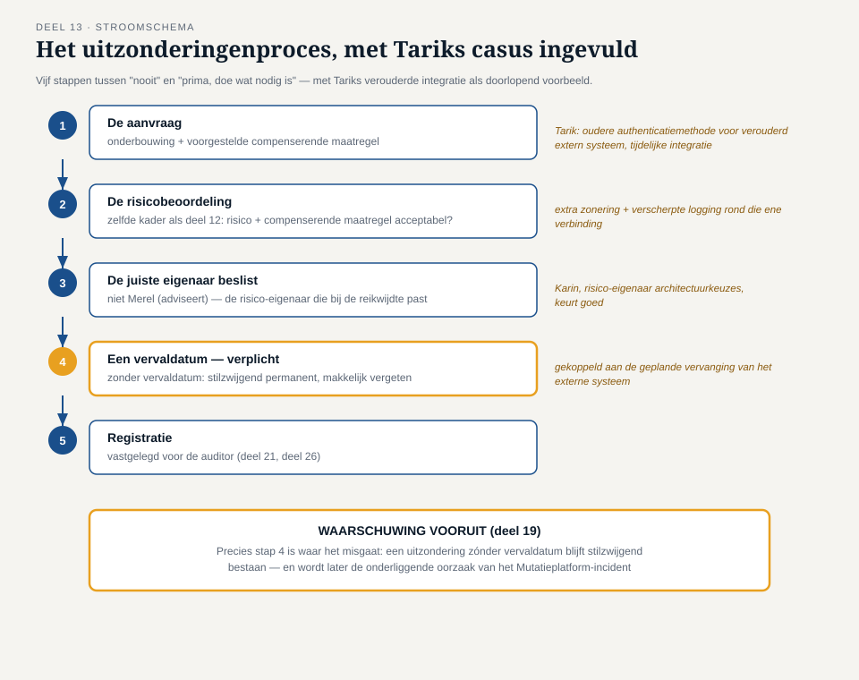

Deel 13 — Beleid, baselines en het uitzonderingenproces
Reader · Ductus-cursus Informatiebeveiliging en privacy · niveau 2 (professional) · deel 13 van 22
Casusvervolg: Tariks verzoek
Met de risicobeoordeling van deel 12 in de hand, wil Tarik weten hoe het Mutatieplatform concreet gebouwd moet worden: welke wachtwoordeisen, welke versleutelingsstandaard, welke logging-diepgang. "Ik kan niet voor elk nieuw onderdeel opnieuw een risicobeoordeling gaan doen," zegt hij. "Geef me iets waar ik als architect gewoon tegenaan kan bouwen." Twee weken later klopt Tarik opnieuw aan, nu met een tegenovergestelde klacht: een van zijn ontwikkelaars wil een specifieke, oudere authenticatiemethode gebruiken voor een tijdelijke integratie met een verouderd extern systeem, en die methode voldoet niet aan de zojuist afgesproken norm. "Wat nu? Bouwen we het toch niet, of mag dit een keer anders?"
Dit deel geeft antwoord op beide vragen: hoe bouw je een beleidshuis dat concreet genoeg is om tegenaan te bouwen, en wat doe je als de praktijk daar — terecht of onterecht — van wil afwijken?
1. Het beleidshuis: van abstract naar concreet
Een veelgemaakte fout is het opstellen van één enkel beveiligingsbeleid dat alles tegelijk probeert te zijn: te abstract om mee te bouwen, te gedetailleerd om aan het bestuur voor te leggen. ISO/IEC 27001 (via clausule 5) vraagt om beleid, maar de praktijk werkt beter met een gelaagd beleidshuis:
- Het beveiligingsbeleid (top) — een kort, door het bestuur vastgesteld document dat de intentie, reikwijdte en verantwoordelijkheden op hoofdlijnen vastlegt. Dit document verandert zelden en is geschreven voor een breed publiek, inclusief toezichthouders.
- Standaarden — concrete, verplichte normen per onderwerp: een wachtwoordstandaard, een cryptografiestandaard, een classificatiestandaard. Standaarden zijn specifiek genoeg om naar te verwijzen bij een concrete bouwvraag ("voldoet dit aan onze cryptografiestandaard?") en worden periodiek herzien als de techniek of dreiging verandert.
- Baselines — een minimale, geconfigureerde uitgangssituatie voor een categorie systemen, bijvoorbeeld "de baseline-configuratie voor een nieuwe server" of "de baseline voor een nieuw ontwikkeld extern gekoppeld systeem". Een baseline is de praktische, direct toepasbare vertaling van standaarden naar een concrete configuratie — het antwoord op Tariks eerste vraag: "geef me iets waar ik tegenaan kan bouwen."
- Richtlijnen en procedures (basis) — stap-voor-stap beschrijvingen van hoe een taak wordt uitgevoerd, bijvoorbeeld "hoe voer je een toegangscontrole uit" of "hoe rapporteer je een incident".
Deze gelaagdheid lost het spanningsveld op waarmee dit deel opende: het beveiligingsbeleid zelf hoeft niet te veranderen als er een nieuwe cryptografische aanbeveling verschijnt — alleen de onderliggende standaard wordt bijgewerkt. Dat houdt het topdocument stabiel en geschikt voor bestuurlijke goedkeuring, terwijl de onderliggende laag flexibel genoeg blijft om mee te bewegen met de praktijk.
2. Een norm schrijven die gehaald kan worden
Een standaard of baseline is alleen waardevol als hij daadwerkelijk kan worden nageleefd. Een norm die te streng is geformuleerd — bijvoorbeeld een wachtwoordlengte die technisch onhaalbaar is voor een bestaand, niet meer te wijzigen legacysysteem — leidt in de praktijk niet tot naleving, maar tot stilzwijgende non-conformiteit: niemand volgt hem, en niemand meldt dat ook. Dat is erger dan een iets minder strenge norm die wél wordt nageleefd, omdat het eerste scenario de aantoonbaarheid (de rode draad uit deel 1) volledig ondermijnt: op papier lijkt alles in orde, in werkelijkheid is niets aantoonbaar werkend.
Een bruikbare norm voldoet aan een paar praktische eisen: ze is specifiek genoeg om zonder interpretatieruimte toe te passen (niet "wachtwoorden moeten sterk zijn", maar een concreet minimum), ze is haalbaar binnen de bestaande en redelijkerwijs te verwachten technische mogelijkheden, en ze bevat een duidelijke eigenaar die verantwoordelijk is voor periodieke actualisatie. Merel betrekt bij het opstellen van elke standaard daarom altijd Tarik of een vergelijkbare technische rol — een norm die alleen vanuit de securityfunctie is bedacht, zonder toetsing aan de praktijk, loopt het grootste risico op precies dit probleem.
3. Het uitzonderingenproces: het deel dat in de praktijk het meeste werk kost
Terug naar Tariks tweede vraag: een ontwikkelaar wil om goede, praktische redenen afwijken van een net vastgestelde standaard. Een streng "nee, dat mag nooit" ondermijnt het draagvlak voor het hele beleidshuis en drijft afwijkingen ondergronds — mensen wijken dan gewoon af zonder het te melden, wat weer botst met aantoonbaarheid. Een te soepel "prima, doe wat nodig is" ondermijnt evenzeer het hele stelsel, want dan is elke standaard feitelijk vrijblijvend.
Het antwoord is een expliciet, gedocumenteerd uitzonderingenproces:
- De aanvraag — wie een afwijking wil, dient die expliciet in, met een onderbouwing waarom de standaardnorm hier niet haalbaar of niet passend is, en welke compenserende maatregel wordt voorgesteld (bijvoorbeeld: als de oudere authenticatiemethode niet kan worden vervangen, dan extra netwerkzonering en aanvullende monitoring rond die ene integratie).
- De risicobeoordeling — de aanvraag wordt beoordeeld volgens hetzelfde kader als in deel 12: welk risico ontstaat door de afwijking, en is dat risico, met de compenserende maatregel, acceptabel binnen de vastgestelde risicobereidheid?
- De juiste eigenaar beslist — niet Merel zelf (die adviseert, deel 4), maar de risico-eigenaar die past bij de reikwijdte van het risico.
- Een vervaldatum — een uitzondering is per definitie tijdelijk of aan een concrete situatie gebonden. Een uitzondering zonder vervaldatum is in de praktijk een permanente aanpassing van de norm die de norm zelf ondermijnt, en wordt bovendien makkelijk vergeten — precies het patroon dat tot de verlopen accounts in deel 5 leidde, nu op het niveau van architectuurbeslissingen.
- Registratie — elke toegekende uitzondering wordt vastgelegd, zodat een auditor (deel 21, deel 26) een compleet beeld krijgt van waar de organisatie bewust van haar eigen normen afwijkt, en waarom.
Voor Tariks specifieke geval: de ontwikkelaar dient een uitzondering in voor de tijdelijke integratie, met als voorgestelde compenserende maatregelen extra zonering (deel 7) rond het verouderde externe systeem en verscherpte logging op die ene verbinding. Karin, als risico-eigenaar voor architectuurkeuzes binnen het programma, beoordeelt en keurt goed met een vervaldatum gekoppeld aan de geplande vervanging van het externe systeem.
4. Waarom dit onderdeel het minste glamour heeft en het meeste werk kost
Van alle onderdelen van een ISMS is het uitzonderingenproces vaak het onderdeel waar organisaties het snelst in verslappen: het kost doorlopende aandacht (elke uitzondering moet ooit vervallen of hernieuwd worden), het genereert weinig zichtbare "vooruitgang" (het is geen nieuwe maatregel, maar een zorgvuldig beheerde afwijking), en het vraagt om het soort discipline dat makkelijk sneuvelt onder tijdsdruk. Toch is een goed gedocumenteerd uitzonderingenproces precies wat het verschil maakt tussen een organisatie die haar eigen normen serieus neemt (en dus soms, beargumenteerd, mag afwijken) en een organisatie waar normen op papier bestaan maar in de praktijk genegeerd worden.
Dit onderwerp is een directe voorbereiding op deel 19 (incidentmanagement), waar tijdsdruk tijdens een echt incident precies deze discipline op de proef zal stellen — en op de masterproef van deel 30, waar het vermogen om onder druk toch zorgvuldig te blijven werken een kernthema is.

